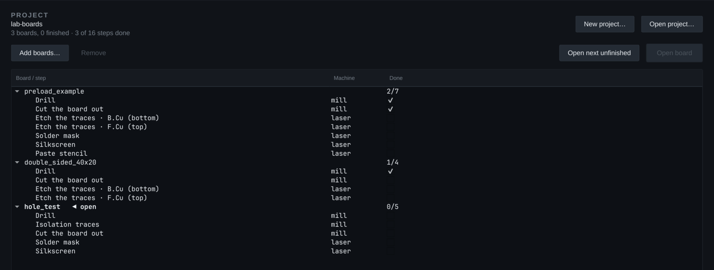

Projects: many boards
A project is one file that lists boards, each with its own steps on the mill and the laser as tick boxes. Made for jobs like the analog synth: eleven boards. Open a board from the list, make it the usual way, and its steps tick themselves.
Pro only
Click the tier chip at the top right to switch to Pro. The Project page then sits beside CNC and Laser at the top of the window (or ).

1 2 3 4 5- The project, and how far it is: boards finished, steps done.
- A laser board: Drill and Cut the board out on the mill (ticked), then each laser job. With copper on both faces its traces are two ticks: Etch the traces · B.Cu (bottom) and · F.Cu (top).
- Another laser board, one step done.
- A mill-only board: Drill, Isolation traces, Cut the board out, then its mask and silkscreen on the laser. ◀ open marks the board loaded now.
- Open next unfinished and Open board.
Make one
- New project…Saved as a
.srmprojfile. Board folders are stored relative to it, so the project and its boards can move together. - Add boards…Point it at a folder: it finds every Gerber folder under it and adds each as a board, named after its folder. A board not opened yet says not opened yet.
- Steps as ticksEach board lists its steps from its own plan: the mill's steps, and each laser job its folder has layers for.
Work through it
- Open a boardOpen board, or double-click it. The window loads it, as it was left.
- Make itThe usual way, on the rail: Make a board. A mill run ticks every step that finished, even if a later one stopped; a whole laser job ticks its row.
- NextOpen next unfinished goes to the next board with a step still to do. The board you leave is kept, with its setup and ticks.
- A tick by hand on the Project page reaches the rail, and back.
- The last project reopens with the app. Opening a board by hand, outside the project, lets the project go.
- One board at a time. Each board in a project is its own sheet on the mill and the laser. To put several boards on one sheet, cut together and etched as one job, see Several boards on one sheet.